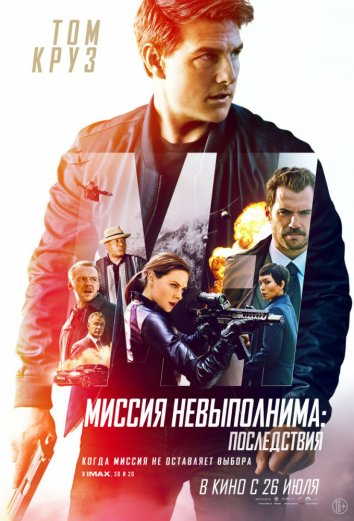

Мир Юрского периода 2

Год:
2018
Жанр:
Фантастика, Приключения, Драмы, Зарубежные
Страна:
США, Испания
Режиссер:
Хуан Антонио Байона
В ролях актеры:
Крис Прэтт,
Брайс Даллас Ховард,
Рейф Сполл,
Джастис Смит,
Даниэлла Пинеда,
Джеймс Кромуэлл,
Тоби Джонс,
Тед Левайн,
Джефф Голдблюм,
Б.Д. Вонг
и другие
В качестве:
720p
В переводе:
Дубляж, Украинский и HDrezka Studio
Возраст:
12+ взрослые темы и понятия, но темы не раскрыты
Время:
128 мин.
Дата выхода:
21 мая 2018 года
Про что фильм «Мир Юрского периода 2»:
Действие фильма разворачивается в наше время, спустя три года после событий, показанных в первой части. Парк «Мир Юрского периода», расположенный на острове Нублар, давно закрыт, но теперь ему и его обитателям грозит полное уничтожение. Пробудившийся на острове вулкан, извержение которого может начаться в любое время, способен в считанные минуты уничтожить всех динозавров.
В это время Клэр Диринг, бывший менеджер парка, пытается организовать миссию по спасению своих питомцев, но правительство США решает, что динозавры должны погибнуть. Неожиданно ей на помощь приходит миллионер Бенджамин Локвуд, после чего, заручившись поддержкой бывшего дрессировщика Оуэна Грэйди, Клэр отправляется на остров.
Миссия невыполнима: Последствия

Год:
2018
Жанр:
Боевики, Приключения, Триллеры, Зарубежные
Страна:
США, Китай
Режиссер:
Кристофер МакКуорри
В ролях актеры:
Том Круз,
Генри Кавилл,
Саймон Пегг,
Ребекка Фергюсон,
Шон Харрис,
Анджела Бассетт,
Ванесса Кирби,
Тед Левайн,
Мишель Монахэн,
Уэс Бентли
и другие
В качестве:
720p
В переводе:
Дубляж, Украинский и HDrezka Studio
Возраст:
16+ для более зрелых и понимающих
Время:
147 мин.
Дата выхода:
12 июля 2018 года
Про что фильм «Миссия невыполнима: Последствия»:
Действие разворачивается вокруг преобразовавшейся террористической организации, которую когда-то ликвидировал Итан Хант. Агенту предстоит вновь столкнуться со старыми врагами и остановить их. Однако порой лучшие намерения приводят к ужасному исходу и в этот раз ряд принятых главным героем решений, сложность ситуации и предательство со стороны союзников, усугубляет положение дел, последствия которых будут губительными для многих людей. Победить в гонке против времени и предотвратить возможную катастрофу Итану Ханту помогают команда и друзья.